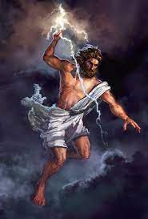

Mitologias
Concepto / Definicion
Es el estudio e interpretación de cuentos o fábulas a menudo sagrados de una cultura conocidos como mitos, o la colección de tales historias que tratan sobre diversos aspectos de la condición humana: el bien y el mal; el significado del sufrimiento; los orígenes del ser humano; el origen de los nombres de los lugares y los animales; los valores culturales y las tradiciones; el significado de la vida y la muerte; la otra vida; y los dioses o dios.
Funcion / papel en el mundo y sociedad
cada sociedad humana tiene su propia mitología, es decir, su propio y particular conjunto de leyendas y mitos que sirven para explicar aquellas cosas que resultan incomprensibles. De todos modos, cada mitología es única e irrepetible ya que está creada en base al entorno que milenariamente ha rodeado a esa comunidad, a la naturaleza, a su vínculo con el más allá, con los cielos, etc. Aquí podemos decir que la mitología determina la identidad de una persona en su colectivo social, por ejemplo no es igual la mitología azteca que la mitología celta
Clasificacion de Mitologias
- Mitología Griega
- Atenea
- Zeus 
- Afrodita
Principales dioses
Diosa de la guerra

Conocida como Atenea o Palas Atenea en Grecia y Minerva en la Antigua Roma, era la diosa más sabia entre todos los dioses del panteón. Diosa de la sabiduría, la estrategia militar y la guerra justa etc. Fue una de las deidades más veneradas por los griegos y los romanos. Atenea tuvo un nacimiento peculiar y es que su padre Zeús tras experimentar un fuerte y agobiante dolor de cabeza,sintió como su frente se abría desde dentro. Agobiado y prácticamente incapacitado por el dolor, el dios del trueno requirió de la ayuda de Hefesto, dios del fuego, quien utilizó un hacha para abrir su cabeza. De esta abertura emergería Atenea, ya como una mujer adulta.Si bien en las versiones más populares del mito Atenea no tiene madre, en mitos menores se dice que su madre fue Metis, diosa que hasta ese entonces era la diosa de la sabiduría. Zeus, tras relacionarse sentimentalmente con esta diosa recibió oscuras predicciones sobre su futuro de un oráculo. Oráculo que le comunicó al rey de los dioses que Metis tendría dos hijos, uno sería Atenea y otro un hijo que lograría destronarlo en el futuro. Temiendo que la profecía se cumpla, Zeus devoró a Metis en la forma de una mosca. Posteriormente el nacimiento de Atenea en esta versión es similar al anteriormente mencionado, la diosa sale de la cabeza de Zeus
Para mas información puedes consultar este videoTambien conocido como Jupiter en la mitologia romana fue el lider de todos los dioses del panteon griego y dios supremo en la mitologia giega y romana . Poseedor del trueno o rayo. Al momento de nacer su padre , Cronos, para impedir la profecia de ser desterrado por uno de sus hijos del trono de los cielos , decide comerse a Zeus el menor de todos su hijos. Sin saberlo la madre de Zeus hizo pasar a este por una roca que fue devorada por Cronos , mientras tanto el pequeño Zeus fue escondido en una cueva en Creta. Hay muchas historias de como este derroto a su padre uno de los relatos mas famosos son el de como hizo vomitar a sus hermanos y la piedra que este habia comido como si de él se tratara. Despues de esto inicio una guerra para derrocarlo durante esta libera a los Cíclopes quienes lo recompensaron dandole como regalo el rayo tras terminar la guerra el junto a sus hermanos mayores (Poseidon y Hades) se reparten el cielo , mar e inframundo
Al subir al Olimpo tomo como su esposa a la diosa Hera quien era su hermana. Durante todo su matrimonio este le fue infiel a Hera provocando la ira de la diosa encontra de sus amantes un claro ejemplo fue con Leto , madre de Artemisa y Apolo , a la cual persiguio con rabia y venganza por mucho tiempo . Si bien la mayoria de sus amorios eran con mujeres hay registros en los que Zeus tenia amorios con hombres quien recebian la misma ira de Hera llegando a un punto en que esta intenta hacer un golpe de estado en el olimpo.
si gusta conocer mas acerca de la historia de Zeús de click en este linkDiosa del amor , la pasion y la lujuria. Tambien conocida como Venus en la mitologia romana era la diosa mas hermosa del Olimpo su nacimiento se romanta a la pelea entre Uranus y Cronos donde este ultimo corta los testiculos de su padre los cuales caen al mar convirtiendose en espuma donde emerge siendo adulta la hermosa diosa. En los relatos griegos se cuenta como esta fue cedida por Zeus a su hermano Hefesto por los problemas que podria ocasionar ya que seria deseada por varios dioses.

Si bien a la diosa se le menciona en varios cantos , relatos e historias en la mayoria de estas juega un papel secundario aunque no se debe descartar que como cualquir otro dios , esta haya sido el personaje principal de una historia siendo la mas famosa cuando la diosa engaña a su esposo , el dios Hefesto , con el dios de la guerra , Ares. Segun en la Iliada de Homero donde se relata esta historia cuenta como Afrodita tiene relaciones sexuales con Ares mientras Hefesto trabajaba. Hefesto al sospechar su infedilidad decide crear unos hilos con una delgadez muy fina los cuales nadie los podria detectar a simple vista mas que el propio Hefesto asi fue el dios dejo sola a su esposa y minutos despues Ares entro a la morada del Dios cuando estaban a punto de tener sexo los hilos inmovilizaron a los dioses ante tal acto ambos dioses recibieron su castigo y rechazo por parte de los demas dioses del panteon griego.
Mas información sobre el mito de la trampa de Hefesto de click en este link.